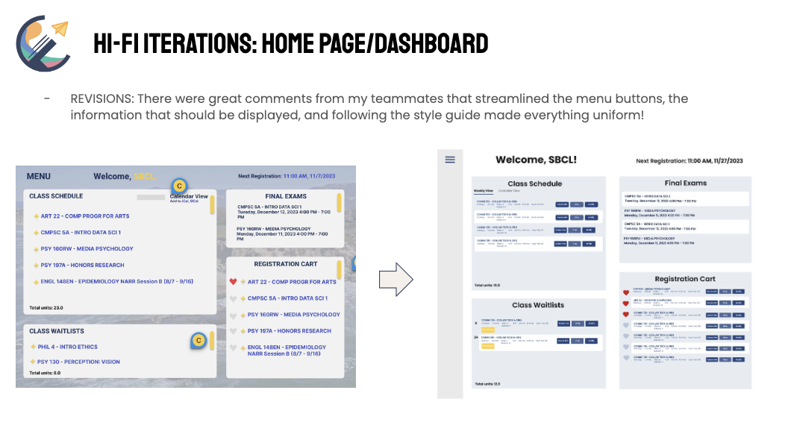

GOLD, UCSB’s online portal for class registration and viewing academic history, is often criticized for having an inefficient UX for class registration. Considering UCSB has around 25,000 students and some majors are impacted, having an efficient registration system is key for student success.
Timeline
3 months (October 2023 -
December 2023)
Rethink the current course registration process and design an improved and optimized interface to make class registration
We conducted a survey with these goals in mind:
To gauge and validate the major user pain points of using GOLD
To understand the user persona (WHO is using the website)
Initial assessment and thoughts of GOLD
After brainstorming as a team, we came up with questions that inquired about class registration, ideal features, pain points, and ease of use for GOLD. Conducting user interviews and consolidating our thoughts through affinity mapping helped us discover key painpoints for the users.
We created user personas, finding the average user to be a UCSB student, ages 18-22 years, with proficient skill in how to navigate a basic webpage. GOLD is used as a platform to register for classes, and the user has additional information they find in GOLD to schedule quarterly course plans. There are various majors which utilize GOLD.
This section highlights the design iterations I was primarily responsible for during this project.
Discovery
GOLD has many links which cause the user to open overlays and tabs which contain very little new information. To consolidate the amount of clicks and to reduce cognitive load, I chose to create a uniform dashboard to access various modules which were otherwise dispersed.
After creating a style guide for our team, we were able to create a sleek and efficient homepage for students to access upcoming deadlines, switch viewing modes for classes, and favorite their class schedule cart -- all one one page.
Click around to see a couple interactions for the modified homepage!
For more in-depth data and information, please feel free to download our presentation below.